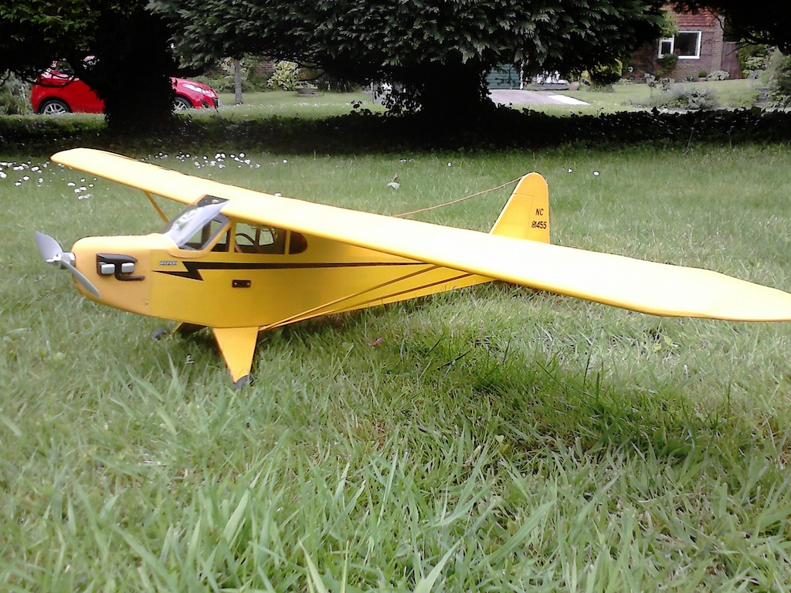
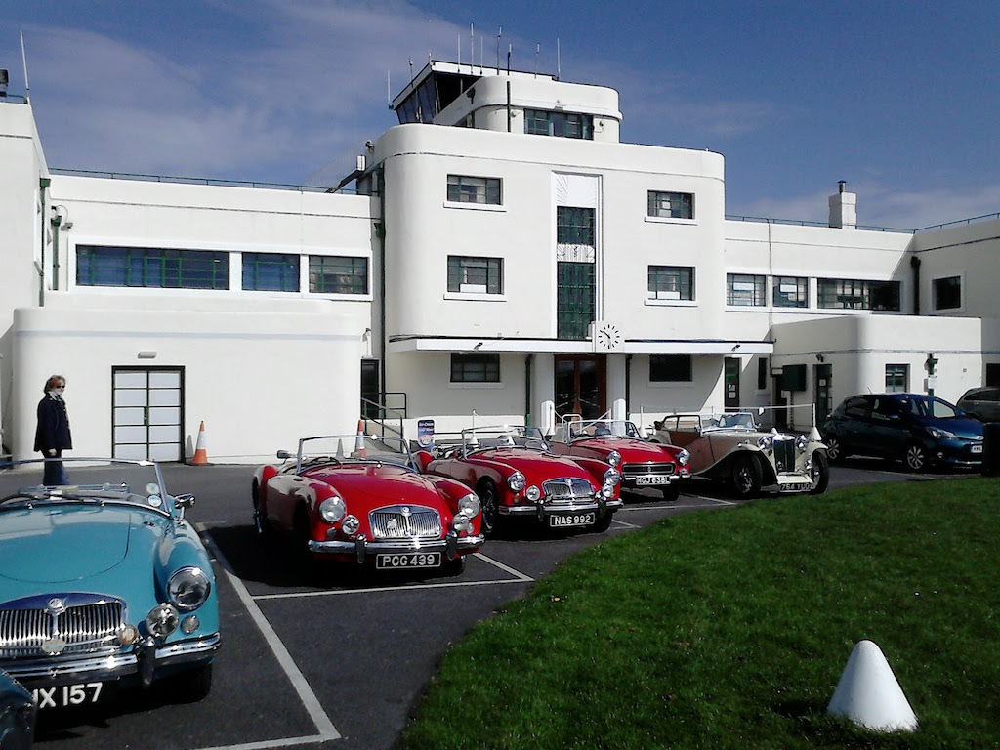

One of my hobbies is building and flying radio controlled aircraft. This was a teenage hobby that I put on hold until I retired! However, at that time I couldn’t afford even single channel radio equipment, so I built and flew control-line models, going round and round until I was too dizzy to stand, or free-flight models that I launched into the elements and then picked up the pieces! I’m now a member of the Sussex Radio Flying Club, the members of which generally fall into two categories (which I know is a big generalisation). There are those who love to fly model planes; gliders, fixed-wing planes with internal combustion engines or electric motors (or even ducted fans) and helicopters. They are happy to buy a ready-built plane or an ARTF (almost ready to fly) that only need an engine/motor, servos and radio receiver fitted. Their aim is to spend more time at the flying field and less in the workshop. Then there are those who like to build model planes, either from kits, where most of the parts have been pre-cut and with extensive instructions, or starting only with a plan. In both of these broad categories, some prefer scale models and some anything that will fly.
I fall into the latter category. In other words, I like to build things and I also like to tinker with the electronics. So far I’ve built a semi-scale, 59” wingspan, Piper Cub from a kit and I’m now building a scale, 50” wingspan, Tiger Moth from plan. The fact that I can fly the resulting plane is a bonus, even though I’m not very skilled at it. Other members get their planes to perform amazing aerobatics, whereas I get my Cub to plod around the standard circuit, with the occasional loop.
The situation seems to be somewhat similar, but more complicated, when it comes to classic cars. Some people like to restore and maintain cars, some are happy to let others do the restoration and maintenance work for them, some would like to restore a car, but don’t have the skills/space/money to do so and restrict themselves to maintenance, and some just like to drive them. I’ve probably missed a few combinations there somewhere.
Where do I fit? Well, I would certainly like to restore a TC, but don’t have the skills, space or money to do so. It is difficult to learn as much about a car by maintaining it, rather than restoring it, but you can gradually gain an appreciation of how it all works by tackling the many small jobs that are needed. And, as far as I’m concerned, cars are meant to be driven.
Now I’m not a competitive drive or even a particularly skilled one. I once went on a driving ‘Red Letter Day’, given to me by the company for which I worked at a time when they actively tried to motivate their staff. We did handbrake turns on a gravel surface, drove a Mitsubishi Evo x (where x was some number less than ten) as fast as we could around a track, did some karting and a few other driving activities. I was pretty hopeless at all of them! But I enjoy driving, all types of vehicles, and I’m keen to drive my TC whenever I can, even if driving on wet, winter days means scraping the mud off the underside when I get home. Drives organised by the Sussex Wanderers and by WSMGOC make an important contribution to the opportunities to not only go on an interesting drive, but join other MGs and their owners. The photo shows a collection of MGs, including my TC, outside the art deco terminal building at Shoreham Airport prior to a Sussex Wanderers run close to home.
When I bought my car the odometer showed 148 miles! I have all the receipts for parts bought since 2010, when the car was brought back from the US, and there is no record of a replacement speedometer. So perhaps the first UK owner zeroed it. He did a lot of restoration work on the car, taking it from a chassis/body with rusted panels and no floor to a road-worthy vehicle. But during this process he put on weight and could not then fit behind the wheel! So he traded his TC, and an MGA he had bought by accident, for a Rolls Royce. He clearly didn’t drive the TC very far.
The second UK owner of my car also liked restoration. In his four-car garage, as well as the TC, he had a Morris 1000 and a Ford Prefect 107E, both awaiting restoration. As it happens, we had owned a Morris 1000 Traveller and my first car was a Ford Prefect 107E (even though at the time I really wanted a TC). The Traveller, known as Doris, came with a spare engine and gearbox. So I fitted new rings and ground the valves and then swapped the engines over.
But returning to the TC. When I bought the car its brakes would seize after about 6 miles and so I guess the previous owner had not driven it very far. In fact it must have only just about made the test drive! Having replaced the brake master cylinder, after only a couple of hundred miles the gearbox was also noticeably looser. The longest run I’ve made in the car so far was the WSGMOC ‘Drive-It Day’, when we travelled 70 miles in all. However, some of the Sussex Wanderers runs have resulted in 50 and 65 mile round trips and in my 11 months of ownership I have driven the TC over 750 miles.
Last September I helped steward at the South Downs Run. At that time the furthest that I had driven my TC in one day was 30 miles and my confidence that I could do a 160 miles round trip was relatively low. However, my confidence is building and this year I hope to take part in the South Downs Run in my TC.
(Written 15th May 2016; published in WSMGOC Main Gear, June 2016.)
© David James 2020 Last updated: 10th April 2020